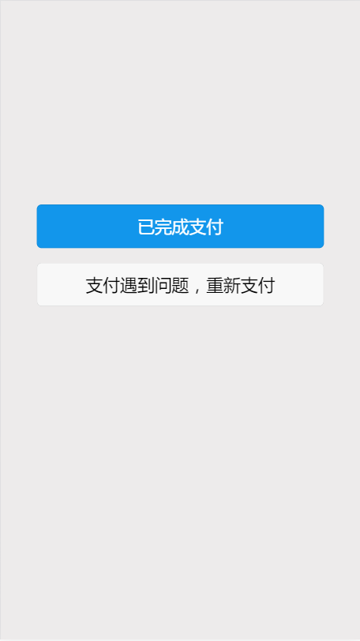

H5支付
逻辑思路
官方时序图
流程理解
- 用户操作浏览器触发下单操作
- 商户后台保存本地订单，调用统一下单接口向微信后台下单，返回支付URL（可编入同步回调地址）
- 浏览器跳转
- 页面验权，返回结果到浏览器，唤起微信客户端支付
- 异步通知，微信后台向商户后台发送支付结果，后台商户根据情况向微信后台返回数据
- 同步回调，支付完成后，微信客户端访问同步回调地址
- 根据客户选择，查询支付结果
- 先查询本地订单状态
- 向微信后台查询订单状态
- 展示最终支付结果
代码逻辑
- 下单
- 本地下单
- 微信下单
- 组织数据，生成sign
- 确保服务器域名添加到微信支付后台
- 回调地址前缀为此域名
- http访问，返回跳转的支付界面 url，拼接同步回调
- 组织数据，生成sign
- 用户访问，支付
- 异步回调（注意过滤器）
- 锁定表
- 判断是否当前订单已处理
- 执行业务，修改订单状态，生成日志记录
- 同步回调，调起用户支付结果中间页
- 已完成支付，查询订单状态
- 未完成，返回支付页面
中间页示例

代码示例
支付页面为 payType.jsp1
2
3
4
5
6
7
8
9
10
11
12
13
14
15
16
17
18
19
20
21
22
23
24
25
26
27
28
29
30
31
32
33
34
35
36
37
38
39
40
41
42
43
44
45
46
47
48
49
50
51
52
53
54
55
56
57
58
59
60
61
62
63
64
65
66
67
68
69
70
71
72
73
74
75
76
77
78
79
80
81
82
83
84
85
86
87
88
89
90
91
92
93
94
95
96
97
98
99
100
101
102
103
104
105
106
107
108
109
110
111
112
113
114
115
116
117
118
119
120
121
122
123
124
125
126
127
128
129
130
131
132
133
134
135
136
137
138
139
140
141
142
143
144
145
146
147
148
149
150
151
152
153
154
155
156
157
158
159
160
161
162
163
164
165
166
167
168
169
170
171
172
173
174
175
176
177
178
179
180
181
182
183
184
185
186
187
188
189
190
191
192
193
194
195
196
197
198
199
200
201
202
203
204
205
206
207
208
209
210
211
212
213
214
215
216
217
218
219
220
221
222
223
224
225
226
227
228
229
230
231
232
233
234
235
236
237
238
239
240
241
242
243
244
245
246
247
248
249
250
251
252
253
254
255
256
257
258
259
260
261
262
263
264
265
266
267
268
269
270
271
272
273
274
275
276
277
278
279
280
281
282
283
284
285
286
287
288
289
290
291
292
293
294
295
296
297
298
299
300
301
302
303
304
305
306
307
308
309
310
311
312
313
314
315
316
317
318
319
320
321
322
323
324
325
326
327
328
329
330
331
332
333
334
335
336
337
338
339
340
341
342
343
344
345
346
347
348
349
350
351
352
353
354/**
* 微信支付
* 参数校验
* 生成本地订单
* 微信下单
* 拼接微信数据
* http访问，返回跳转的支付界面 url与同步回调
* @param session
* @param amount 缴纳金额
* @return
*/
("/weiXinPay")
public String weiXinPay(HttpServletRequest request,Model model,HttpSession session,String amount){
//参数校验
//金额 当前登录状态
try{
DecimalFormat decimalFormat = new DecimalFormat("0.00");
amount = decimalFormat.format(new BigDecimal(amount));
}catch(Exception e){
e.printStackTrace();
model.addAttribute("nRes", 0);
model.addAttribute("vcRes", "参数非法~");
}
//数据不合理
if(model.containsAttribute("nRes")){
return "payType";//返回提交页面，提示错误信息
}
//生成本地订单
String vcOrderId = UUID.generateSequenceNo();
boolean addTempOrderMark = payService.addTempOrder(vcOrderId,vcUserTel,vcUserTel,
new BigDecimal(amount), "党费缴纳",vcSource,"微信",amount);//本地下单，代码就不展示了
if(!addTempOrderMark){
//本地订单生成失败
model.addAttribute("nRes", 0);
model.addAttribute("vcRes", "网络异常~");
return "payType";//返回提交页面，提示错误信息
}
//拼接微信数据
SortedMap<String, Object> parameterMap = new TreeMap<String, Object>();
parameterMap.put("key", wx_api_key);//密钥
parameterMap.put("appid", wx_app_id);//appid
parameterMap.put("mch_id", wx_mch_id);//商户号
String nonce_str = WebUtil.getRandomStr();
parameterMap.put("nonce_str",nonce_str);
parameterMap.put("sign_type", "MD5");
parameterMap.put("body", "缴纳");
parameterMap.put("out_trade_no", vcOrderId);//商户系统 本地订单号
parameterMap.put("fee_type", "CNY");
BigDecimal total = new BigDecimal(amount).multiply(new BigDecimal(100));
java.text.DecimalFormat df = new java.text.DecimalFormat("0");
parameterMap.put("total_fee", df.format(total));
String ip = WebUtil.getIp(request);//获取调用者的ip
parameterMap.put("spbill_create_ip", ip);
parameterMap.put("notify_url", SysSetting.wx_notify_url);
parameterMap.put("trade_type", "MWEB");//官方文档 写死
String sign = WXPayUtil.createSign(parameterMap);
parameterMap.put("sign", sign);
//http访问，返回跳转的支付界面
String requestXML = WXPayUtil.getRequestXml(parameterMap);
String result = WXPayUtil.httpsRequest("https://api.mch.weixin.qq.com/pay/unifiedorder", "POST", requestXML);
Map<String, String> map = new HashMap<String,String>();
try {
map = WXPayUtil.doXMLParse(result);
} catch (Exception e) {
e.printStackTrace();
model.addAttribute("nRes", 0);
model.addAttribute("vcRes", "网络信息转换异常~");
return "payType";//返回提交页面，提示错误信息
}
String result_code = map.get("result_code");
if("SUCCESS".equals(result_code)){
//url与同步回调
String redirectUrl = SysSetting.wx_return_url+"?out_trade_no="+vcOrderId;
return "redirect:"+map.get("mweb_url")+"&redirect_url="+URLEncoder.encode(redirectUrl);
}else{
model.addAttribute("nRes", 0);
model.addAttribute("vcRes", "网络信息异常~");
return "payType";//返回提交页面，提示错误信息
}
}
/**
* 微信的异步通知
* @param request
* @param httpServletResponse
* @throws IOException
*/
("notify")
public void wxpaySucc(HttpServletRequest request,HttpServletResponse httpServletResponse,HttpSession session){
InputStream inStream;
ByteArrayOutputStream outSteam = null;
Map<String, String> params = null;
try {
inStream = request.getInputStream();
outSteam = new ByteArrayOutputStream();
byte[] buffer = new byte[1024];
int len = 0;
while ((len = inStream.read(buffer)) != -1) {
outSteam.write(buffer, 0, len);
}
String resultxml = new String(outSteam.toByteArray(), "utf-8");
params = new HashMap<String, String>();
params = WXPayUtil.doXMLParse(resultxml);
outSteam.close();
inStream.close();
} catch (UnsupportedEncodingException e1) {
// TODO Auto-generated catch block
e1.printStackTrace();
} catch (IOException e1) {
// TODO Auto-generated catch block
e1.printStackTrace();
} catch (DocumentException e1) {
// TODO Auto-generated catch block
e1.printStackTrace();
}
String result = "";
String wx_api_key = null;
params.put("key", wx_api_key);
if (!WXPayUtil.isTenpaySign(params)) {
// 支付失败
result = "<xml>"+
"<return_code><![CDATA[FAIL]]></return_code>"+
"<return_msg><![CDATA[OK]]></return_msg>"+
"</xml>";
} else {
// ------------------------------
// 处理业务开始
// ------------------------------
String total_fee = params.get("total_fee");
BigDecimal totalFee = new BigDecimal(total_fee);
BigDecimal totalFee_Yuan = totalFee.divide(new BigDecimal(100));
String orderNo = params.get("out_trade_no"); //商户订单号
String trxId = params.get("transaction_id"); //微信订单号
payService.notifyDoJob(orderNo, trxId, totalFee_Yuan, "微信");//执行业务操作，锁表，防止多次操作
//SELECT * FROM `ams_web_alipay_temp` WHERE vcOrderId = ? for UPDATE
result = "<xml>"+
"<return_code><![CDATA[SUCCESS]]></return_code>"+
"<return_msg><![CDATA[OK]]></return_msg>"+
"</xml>";
}
try {
PrintWriter writer = httpServletResponse.getWriter();
writer.print(result);
writer.flush();
writer.close();
} catch (Exception e) {
// TODO: handle exception
e.printStackTrace();
}
}
/**
* 微信同步回调
* @param request
* @param httpServletResponse
* @param session
* @return
*/
("wapWXReturn")
public String wapWXReturn(HttpServletRequest request,HttpServletResponse httpServletResponse,HttpSession session,String out_trade_no){
Map<String, Object> orderInfo = payService.getOrderInfo(out_trade_no);
String exe = orderInfo.get("nExe").toString();
if("1".equals(exe)){
return "pay_success";
}else{
return "pay_fail";
}
}
//工具类
public class WXPayUtil {
// 请求xml组装
public static String getRequestXml(SortedMap<String, Object> parameters) {
parameters.remove("key");
StringBuffer sb = new StringBuffer();
sb.append("<xml>");
Set<Map.Entry<String, Object>> es = parameters.entrySet();
Iterator<Map.Entry<String, Object>> it = es.iterator();
while (it.hasNext()) {
Map.Entry entry = (Map.Entry) it.next();
String key = (String) entry.getKey();
String value = (String) entry.getValue();
if ("attach".equalsIgnoreCase(key) || "body".equalsIgnoreCase(key) || "sign".equalsIgnoreCase(key)) {
sb.append("<" + key + ">" + "<![CDATA[" + value + "]]></" + key + ">");
} else {
sb.append("<" + key + ">" + value + "</" + key + ">");
}
}
sb.append("</xml>");
return sb.toString();
}
// 生成签名
public static String createSign(SortedMap<String, Object> parameters) {
StringBuffer sb = new StringBuffer();
Set es = parameters.entrySet();
Iterator it = es.iterator();
while (it.hasNext()) {
Map.Entry entry = (Map.Entry) it.next();
String k = (String) entry.getKey();
Object v = entry.getValue();
if (null != v && !"".equals(v) && !"sign".equals(k) && !"key".equals(k)) {
sb.append(k + "=" + v + "&");
}
}
if(parameters.get("key") != null){
sb.append("key=" + parameters.get("key"));
}
String sign = WebUtil.getMD5Str(sb.toString()).toUpperCase();
return sign;
}
/**
* 验证回调签名
*
* @param packageParams
* @param key
* @param charset
* @return
*/
public static boolean isTenpaySign(Map<String, String> map) {
String charset = "utf-8";
String signFromAPIResponse = map.get("sign");
if (signFromAPIResponse == null || signFromAPIResponse.equals("")) {
System.out.println("API返回的数据签名数据不存在，有可能被第三方篡改!!!");
return false;
}
//System.out.println("服务器回包里面的签名是:" + signFromAPIResponse);
// 过滤空 设置 TreeMap
SortedMap<String, String> packageParams = new TreeMap<>();
for (String parameter : map.keySet()) {
String parameterValue = map.get(parameter);
String v = "";
if (null != parameterValue) {
v = parameterValue.trim();
}
packageParams.put(parameter, v);
}
StringBuffer sb = new StringBuffer();
Set es = packageParams.entrySet();
Iterator it = es.iterator();
while (it.hasNext()) {
Map.Entry entry = (Map.Entry) it.next();
String k = (String) entry.getKey();
String v = (String) entry.getValue();
if (!"sign".equals(k) && null != v && !"".equals(v) && !"key".equals(k)) {
sb.append(k + "=" + v + "&");
}
}
sb.append("key=" + packageParams.get("key"));
// 将API返回的数据根据用签名算法进行计算新的签名，用来跟API返回的签名进行比较
// 算出签名
String resultSign = "";
String tobesign = sb.toString();
if (null == charset || "".equals(charset)) {
resultSign = WebUtil.getMD5Str(tobesign).toUpperCase();
} else {
resultSign = WebUtil.getMD5Str(tobesign).toUpperCase();
}
String tenpaySign = ((String) packageParams.get("sign")).toUpperCase();
return tenpaySign.equals(resultSign);
}
// 请求方法
public static String httpsRequest(String requestUrl, String requestMethod, String outputStr) {
try {
URL url = new URL(requestUrl);
HttpURLConnection conn = (HttpURLConnection) url.openConnection();
conn.setDoOutput(true);
conn.setDoInput(true);
conn.setUseCaches(false);
// 设置请求方式（GET/POST）
conn.setRequestMethod(requestMethod);
conn.setRequestProperty("content-type", "application/x-www-form-urlencoded");
// 当outputStr不为null时向输出流写数据
if (null != outputStr) {
OutputStream outputStream = conn.getOutputStream();
// 注意编码格式
outputStream.write(outputStr.getBytes("UTF-8"));
outputStream.close();
}
// 从输入流读取返回内容
InputStream inputStream = conn.getInputStream();
InputStreamReader inputStreamReader = new InputStreamReader(inputStream, "utf-8");
BufferedReader bufferedReader = new BufferedReader(inputStreamReader);
String str = null;
StringBuffer buffer = new StringBuffer();
while ((str = bufferedReader.readLine()) != null) {
buffer.append(str);
}
// 释放资源
bufferedReader.close();
inputStreamReader.close();
inputStream.close();
inputStream = null;
conn.disconnect();
return buffer.toString();
} catch (ConnectException ce) {
System.out.println("连接超时：{}" + ce);
} catch (Exception e) {
System.out.println("https请求异常：{}" + e);
}
return null;
}
// xml解析
public static Map doXMLParse(String strxml) throws DocumentException,IOException {
strxml = strxml.replaceFirst("encoding=\".*\"", "encoding=\"UTF-8\"");
if (null == strxml || "".equals(strxml)) {
return null;
}
Map<String,String> m = new HashMap<String,String>();
InputStream in = new ByteArrayInputStream(strxml.getBytes("UTF-8"));
SAXReader reader = new SAXReader();
Document doc = reader.read(in);
Element root = doc.getRootElement();
List<Element> list = root.elements();
Iterator<Element> it = list.iterator();
while (it.hasNext()) {
Element e = (Element) it.next();
String k = e.getName();
String v = e.getStringValue();
m.put(k, v);
}
// 关闭流
in.close();
return m;
}
}
注意点
- 基本参数不要搞错，商户秘钥、商户号、appid、secret，否则会报sign验证失败，而且找不到问题
- ip地址获取
- 异步回调，防止业务流程执行多次
- 同步回调，加入用户选择页面
APP原生支付
逻辑思路
官方时序图
流程理解
- 用户进入app
- 选择商品，下单
- 确认支付，向商户后台确认订单
- 商户后台生成本地订单，再调用微信统一下单接口
- 商户后台获取微信返回数据（prepay_id）
- 商户后台生成新的sign，返回app
- app接收数据，唤起微信客户端
- 用户与微信app支付流程不用考虑
- 异步回调：微信后台向商户后台发送支付结果，后台商户根据情况向微信后台返回数据
- 同步，微信再唤起商户app时，会返回支付状态，根据支付状态去后台查真正有效的支付状态，再展示给用户
代码逻辑
- 下单（事务）
- 生成本地订单
- 微信统一接口下单
- 拼接sign签名下单
- 下单成功，生成新的sign交给app
- 异步回调
- 解析xml
- 校验sign
- 返回失败
- 处理本地订单
- 是否已处理
- 锁定记录
- 处理
- 同步回调
- App调用订单支付状态查询接口
代码示例
1 |
|
注意点
- 下单需要生成签名两次，每次生成签名都需要在末尾追加 key
- 两次签名的数据源依据官网文档补全数据，全小写
- 因异步回调延迟，app查询订单状态可延迟或循环查询